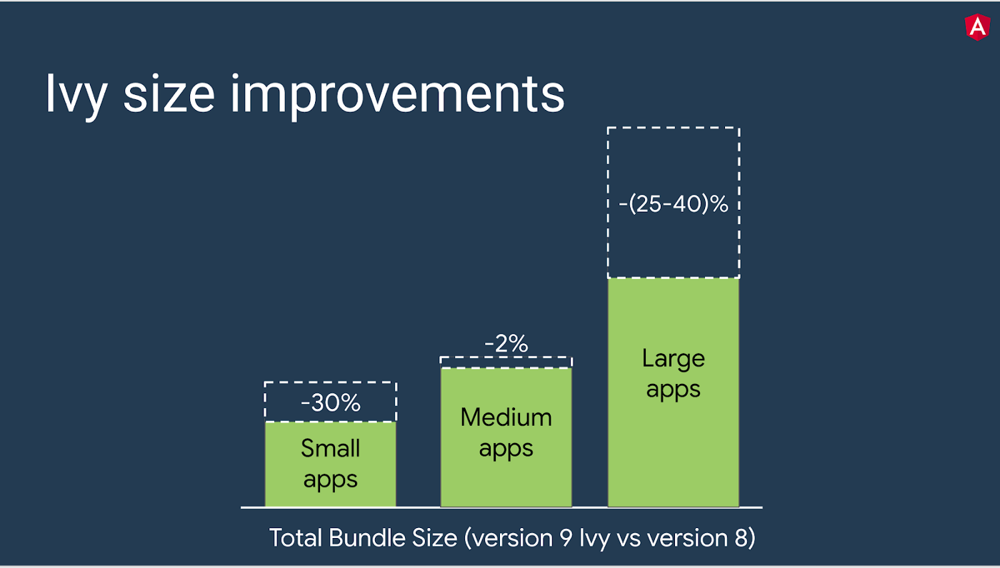

<div fxLayout="row wrap" fxLayout.xs="column">
  <div fxFlex="100" fxFlex.xs="100">
    <div class="parent">
      <div class="header" >
        <div style="font-size: 30px;">My Blog</div>
        <div style="font-size: 14px;">A Responsive Blog created by me</div>
      </div>
      <div class="toolbar" fxLayout.xs="column" fxFlex.xs="100">
        <a >Home</a>
        <a >My Contacts</a>
        <a >Career</a>
      </div>
      <div class="left-side" fxShow.gt-xs  fxHide.xs>
        <div class="left-side-view">
          <div style="display: block;float: left;">
            <h4>About Me</h4>
            <div>Photo of me</div>
            <div style="height: 200px;width: 200px;background-color: gray;color: white;text-align: center;">
              Photo
            </div>
            <div>
              some text about me, Im harish
            </div>
            <h4>More Text</h4>
            <div *ngFor="let item of [1,2,3,4]"
              style="height: 20px;width: 200px;background-color: gray;color: white;text-align: center;margin: 20px;">

            </div>
          </div>
        </div>
      </div>
      <div class="main">
        <div style="font-family: Loto;font-size: 20px;font-weight: 300;margin-left: 30px;">
          <h3>Version 9 of Angular Now Available</h3>
          <div>The 9.0.0 release of Angular is here! This is a major release that spans the entire platform, including
            the framework, Angular Material, and the CLI. This release switches applications to the Ivy compiler and
            runtime by default, and introduces improved ways of testing components.</div>
          <div>
            
          </div>
          <h3>How to update to version 9</h3>
          <div>First, update to the latest version of 8</div>
          <pre><code highlight="ng update @angular/cli@8 @angular/core@8"></code></pre>
          <div>Then, update to 9</div>
          <pre><code highlight="ng update @angular/cli @angular/core"></code></pre>
          <h3>Ivy</h3>
          <div>
            Version 9 moves all applications to use the Ivy compiler and runtime by default. In addition to hundreds of
            bug fixes, the Ivy compiler and runtime offers numerous advantages:
            <mat-list>
              <mat-list-item>Smaller bundle sizes</mat-list-item>
              <mat-list-item>Faster testing</mat-list-item>
              <mat-list-item>Better debugging</mat-list-item>
              <mat-list-item>Improved CSS class and style binding</mat-list-item>
              <mat-list-item>Improved type checking</mat-list-item>
              <mat-list-item>Improved build errors</mat-list-item>
              <mat-list-item>Improved build times, enabling AOT on by default</mat-list-item>
              <mat-list-item>Improved Internationalization</mat-list-item>
            </mat-list>
          </div>
          <h3>Smaller bundle sizes</h3>
          <div>
            <p>The Ivy compiler has been designed to remove parts of Angular that aren’t being used via tree-shaking and
              to generate less code for each Angular component.</p>
            <p>With these improvements, small apps and large apps can see the most dramatic size savings.</p>
            <mat-list>
              <mat-list-item>Small apps that don’t use many Angular features can benefit most from tree-shaking.
              </mat-list-item>
              <mat-list-item>Large apps with many components can benefit most from the reduced factory size.
              </mat-list-item>
              <mat-list-item>Medium-sized apps should see bundle sizes that are on par or slightly smaller, since they
                benefit less from tree-shaking and don’t have enough components to truly leverage smaller factories.
              </mat-list-item>
            </mat-list>
            
          </div>
          <h3>Improved CSS class and style binding</h3>
          <div>
            <p>The Ivy compiler and runtime provides improvements for handling styles. Previously, if an application
              contained competing definitions for a style, those styles would destructively replace each other. With
              Ivy, the styles are merged in a predictable way.</p>
            <p>Consider the following template and component snippets:</p>
            
          </div>
          <h3>Java Script Example</h3>
        </div>
      </div>
      <div class="right-side" fxShow.gt-xs fxHide.xs>
        <div style="display: block;background-color: white;margin: 10px;padding: 20px;">
          <h4>About Me</h4>
          <div>Photo of me</div>
          <div style="height: 200px;width: 200px;background-color: gray;color: white;text-align: center;">
            Photo
          </div>
          <div>
            some text about me, Im harish
          </div>
        </div>
        <div style="display: block;background-color: white;margin: 10px;padding: 20px;">
          <h4>Popular posts</h4>
          <div *ngFor="let item of [1,2,3,4]"
            style="height: 20px;width: 200px;background-color: gray;color: white;text-align: center;margin: 20px;">
            image
          </div>
        </div>
        <div style="display: block;background-color: white;margin: 10px;padding: 20px;">
          <h4>Follow me</h4>
          Some text here
        </div>
      </div>
      <div class="footer">
        <h2>Footer</h2>
      </div>
    </div>

  </div>
</div>